Explore Beautiful Malaysia
Discover the Wonders of Our Nation
From breathtaking tropical islands and beautiful beaches to historical cities and magnificent mountains, Malaysia is filled with amazing destinations waiting to be explored.
Famous Landmarks and Attractions
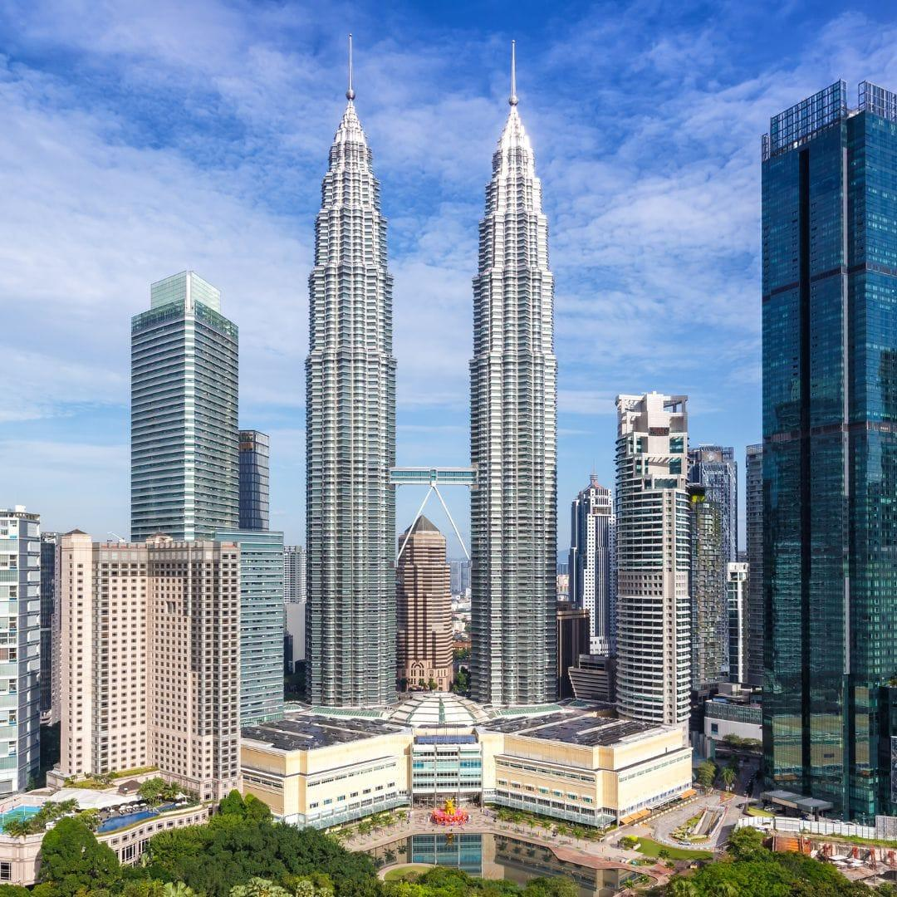
Petronas Twin Towers
One of Malaysia's most recognisable landmarks, located in the heart of Kuala Lumpur.
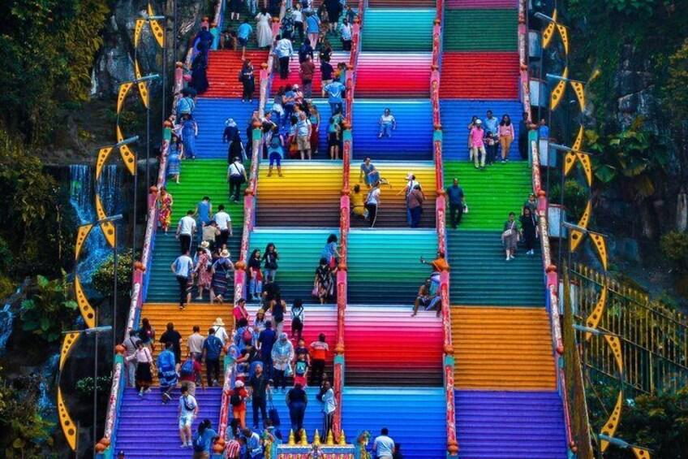
Batu Caves
A famous limestone hill featuring caves, Hindu temples and a colourful staircase.
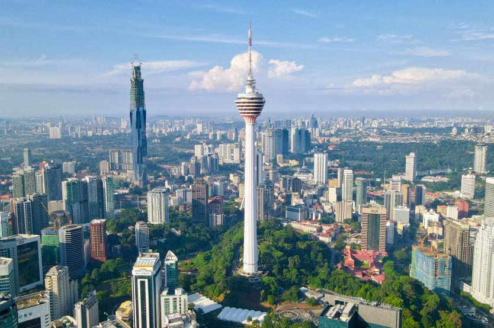
KL Tower
A telecommunications tower offering spectacular views of Kuala Lumpur's skyline.
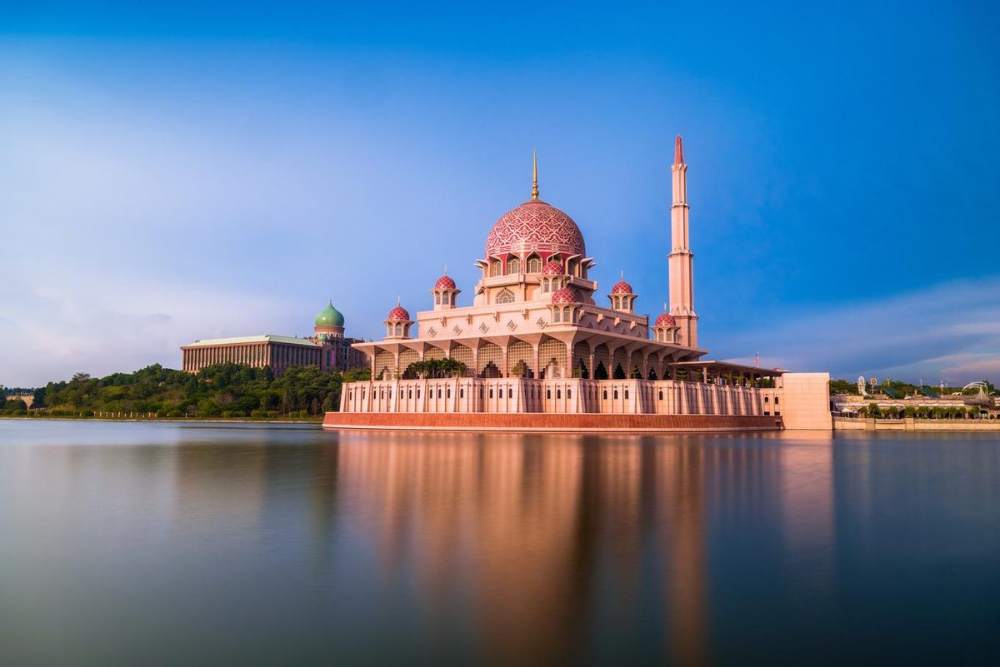
Putra Mosque
A beautiful pink-domed mosque located beside Putrajaya Lake.
Beautiful Islands and Beaches
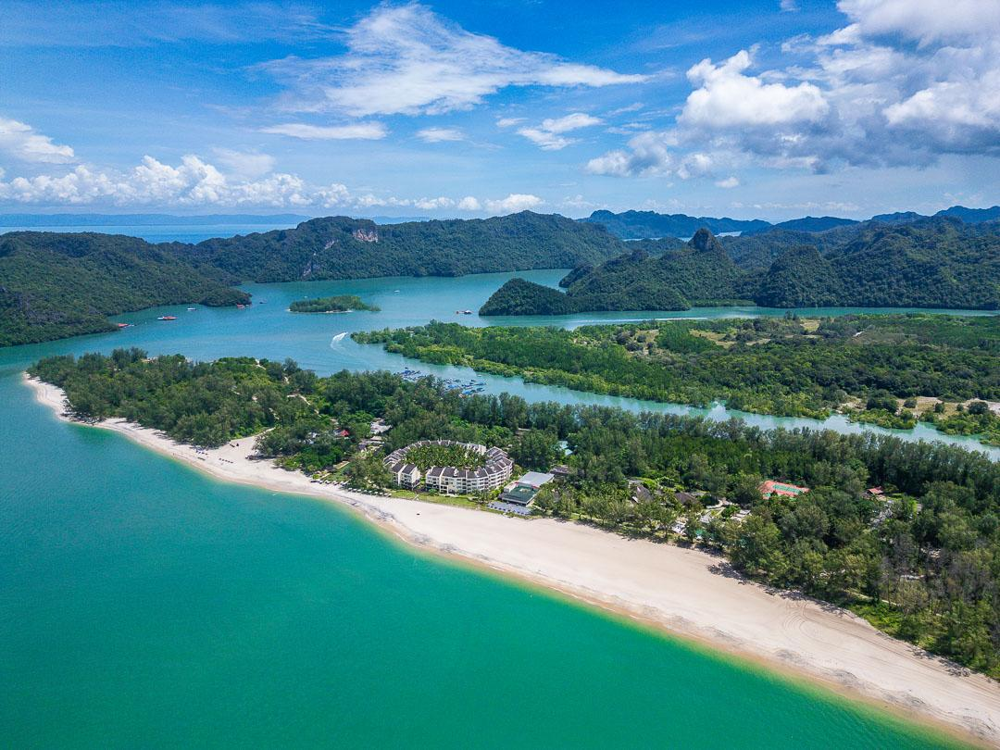
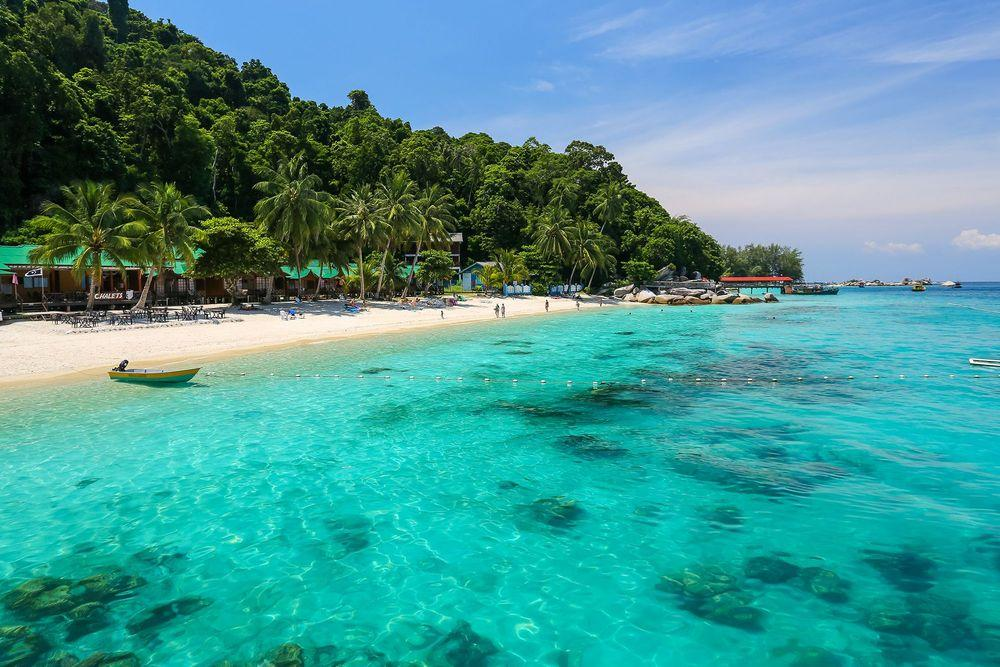
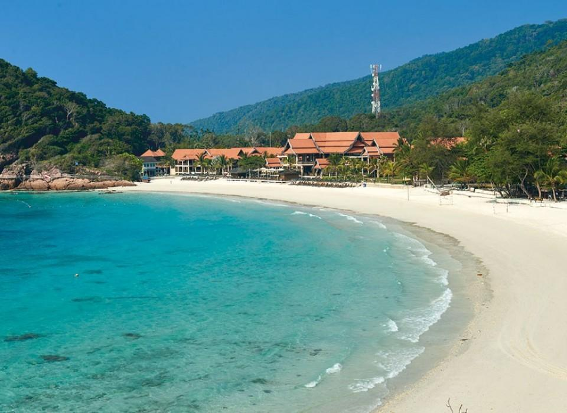
- Langkawi: Famous for beautiful beaches, island activities and the Langkawi Sky Bridge.
- Perhentian Islands: Known for clear waters, snorkelling and marine life.
- Redang Island: A popular destination for diving and relaxing on tropical beaches.
- Sipadan Island: Famous for its rich underwater biodiversity and diving experiences.
Nature and Adventure Destinations
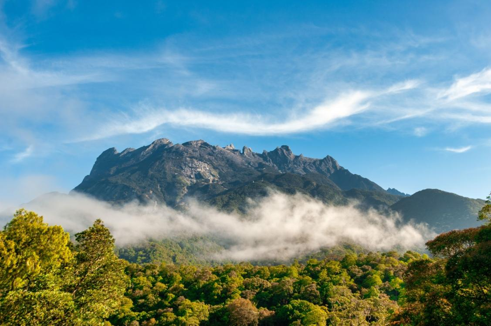
Mount Kinabalu
One of Southeast Asia's most famous mountain destinations.
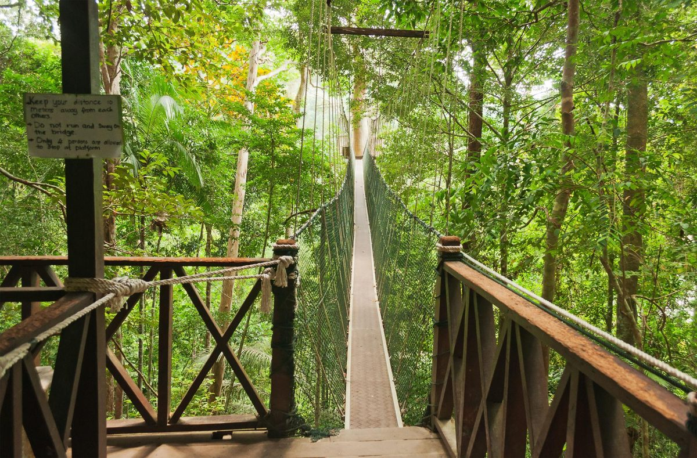
Taman Negara
A tropical rainforest known for its biodiversity and jungle activities.
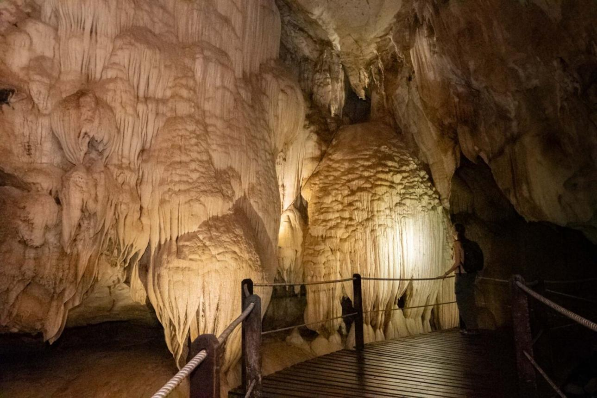
Gunung Mulu National Park
Famous for its limestone formations, caves and natural beauty.
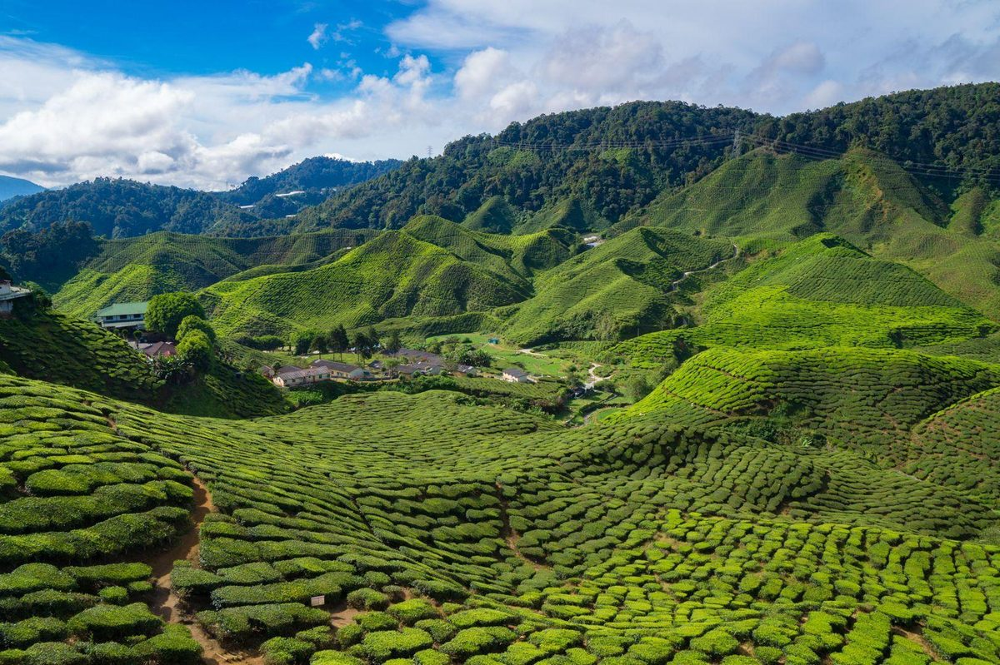
Cameron Highlands
Known for tea plantations, cool weather and beautiful green landscapes.
Historical and Cultural Destinations
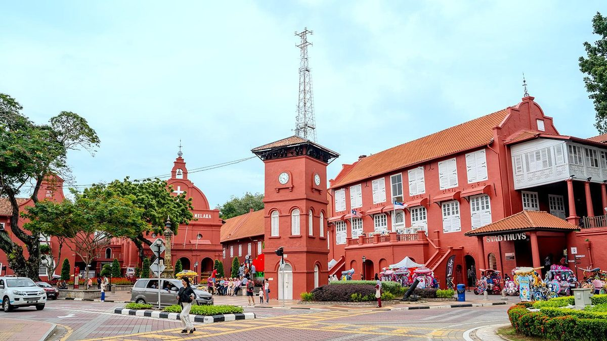
Melaka Historic City
Famous for its colonial buildings, museums and historical landmarks.
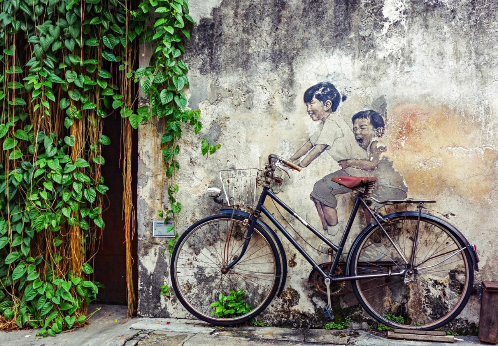
George Town
Known for its heritage buildings, street art and multicultural history.
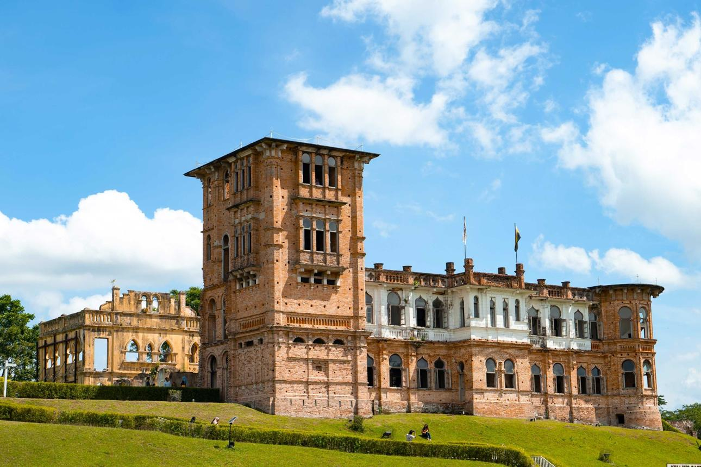
Kellie's Castle
A fascinating unfinished historical mansion.
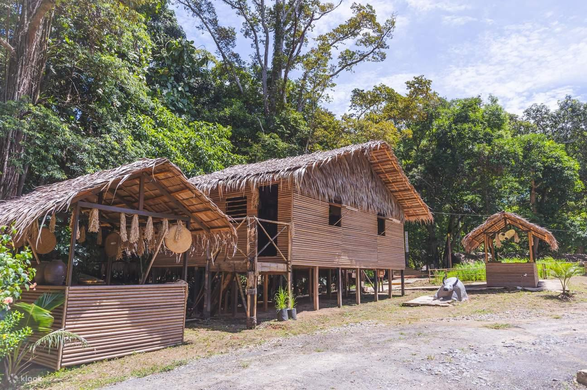
Sarawak Cultural Village
A living museum showcasing the traditional houses and cultures of Sarawak's communities.